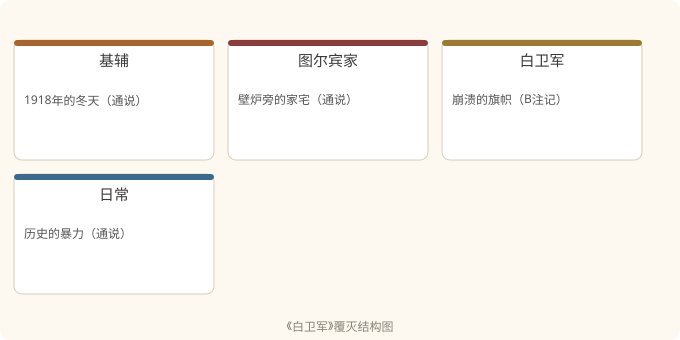

白卫军
一、基本信息
| 作者 | 米哈伊尔·布尔加科夫 |
|---|---|
| 成书/出版 | 作者页注记：Britannica——白卫军（年份通说待核——1925-27连载说） Mikhail Bulgakov — Encyclopaedia Britannica（百科全书） |
| 国别/地区 | 苏联 |
| 时代 | 近代 · 20世纪20年代 |
| 体裁 | 长篇小说 |
| 语言 | 俄语 |

《白卫军》覆灭结构图（主题·结构图）
二、创作背景
作者页注记：白卫军、图尔宾一家的日子——'（Britannica）'。
Britannica：布尔加科夫——《大师与玛格丽特》作者、多部被禁（作者页语境）。
题材（通说待核）：1918年基辅——图尔宾一家在内战中的覆灭。
三、内容脉络
（通说待核）图尔宾兄妹与'白卫军'的崩溃。
（通说待核）冬夜壁炉与家宅的象征。
四、主要人物表
| 人物 | 身份 | 说明 |
|---|---|---|
| 阿列克谢·图尔宾 | 军医 | （通说待核） |
| 叶莲娜 | 妹妹 | （通说待核） |
五、主题与艺术特点
- 内战中'白'的挽歌（通说待核）。
- 家宅的守护（通说待核）。
- 历史的暴力与日常（作者页语境）。
六、影响与评论
- Britannica：白卫军（作者页注记）。
Mikhail Bulgakov — Encyclopaedia Britannica（百科全书） - Britannica：改编《图尔宾一家的日子》被禁史（作者页注记——待核）。
Mikhail Bulgakov — Encyclopaedia Britannica（百科全书）
七、阅读建议
难点
- 乌克兰内战的多方势力。
- '白军'视角的历史叙事。
- 《白卫军》中译本（人民文学等——通说待核）。
- 俄文原版。
布尔加科夫早期首选；后接《大师与玛格丽特》。
八、待核实
- 图尔宾人名核对（通说）。
- 1925-27年连载（《俄罗斯》杂志说）待核。
- 《图尔宾一家的日子》1926首演细节待核。